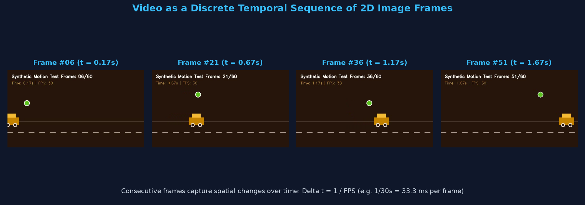
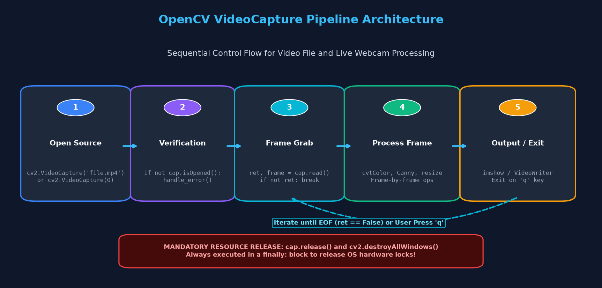
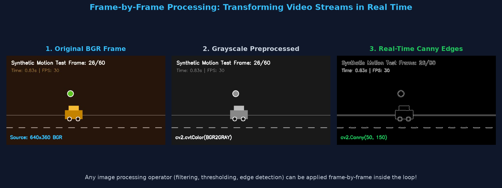
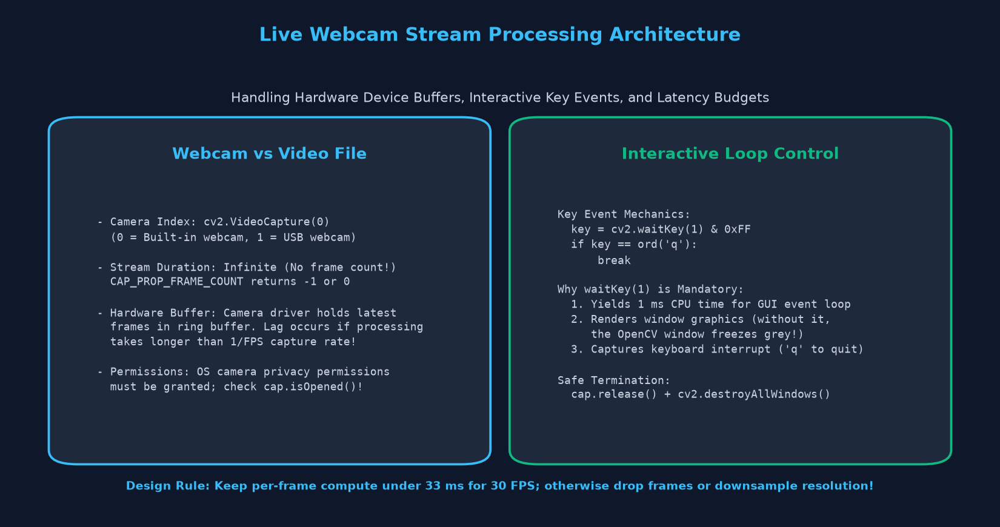
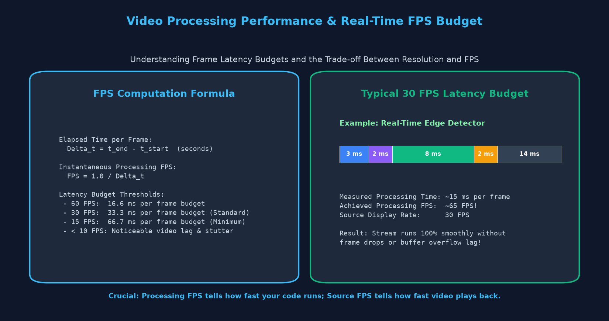
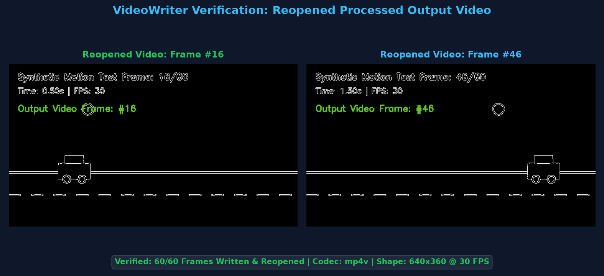

Reading Video Files, Live Webcam Streams, Real-Time Frame Loops, VideoWriter & Performance Measurement
Computer Vision mein video koi alag magical file format nahi hota — video is simply a rapid sequential stream of still 2D image frames played at a fixed frequency measured in Frames Per Second (FPS).

(height, width, 3) hota hai (BGR format).Δt = 1.0 / FPS. For 30 FPS, har frame ka time budget lagbhag 33.3 milliseconds hota hai.Duration (seconds) = Total Frames / FPS.OpenCV provides a unified, powerful class called cv2.VideoCapture. Yeh single class video files (.mp4, .avi, .mov), live hardware webcams (device index 0, 1), aur network RTSP/HTTP camera streams sabhi ko read karne ke liye use hoti hai.

Video file ya camera stream ki specifications read karne ke liye cap.get(propId) call kiya jata hai:
| Property Constant | ID | Description & Meaning | Webcam Behavior |
|---|---|---|---|
cv2.CAP_PROP_FRAME_WIDTH |
3 | Frame width in pixels (e.g. 640 or 1920) | Camera sensor capture width |
cv2.CAP_PROP_FRAME_HEIGHT |
4 | Frame height in pixels (e.g. 360 or 1080) | Camera sensor capture height |
cv2.CAP_PROP_FPS |
5 | Playback frame rate (e.g. 30.0 FPS) | Camera hardware stream rate |
cv2.CAP_PROP_FRAME_COUNT |
7 | Total frames stored in the video file | Returns -1 or 0 (Webcam is infinite!) |
cv2.CAP_PROP_POS_FRAMES |
1 | Current 0-based frame index being decoded | Increments with each read() |
cv2.CAP_PROP_POS_MSEC |
0 | Current video timestamp in milliseconds | Elapsed stream timestamp |
import cv2
# Initialize VideoCapture with video file path
cap = cv2.VideoCapture("sample_motion.mp4")
# Always check if video file opened successfully
if not cap.isOpened():
print("Error: Could not open video file!")
exit()
# Query video stream properties
width = int(cap.get(cv2.CAP_PROP_FRAME_WIDTH))
height = int(cap.get(cv2.CAP_PROP_FRAME_HEIGHT))
fps = cap.get(cv2.CAP_PROP_FPS)
total_frames = int(cap.get(cv2.CAP_PROP_FRAME_COUNT))
duration = total_frames / fps if fps > 0 else 0
print(f"Resolution : {width} x {height}")
print(f"Frame Rate : {fps:.2f} FPS")
print(f"Total Frames: {total_frames}")
print(f"Duration : {duration:.2f} seconds")
# Read a single test frame
ret, frame = cap.read()
if ret:
print(f"Single Frame Shape: {frame.shape}, Data Type: {frame.dtype}")
# Crucial: Always release resources when finished!
cap.release()
Video processing ka core hota hai ek while loop jo har frame ko sequentially decode karta hai, uspe image operations apply karta hai, aur display ya save karta hai.
ret, frame = cap.read():cap.read() ek tuple return karta hai:ret (boolean): True agar frame successfully decode hua, False agar video khatam ho gaya ya camera disconnect ho gaya.frame (ndarray): Decoded 3-channel BGR image array jiska shape (height, width, 3) hota hai.

import cv2
cap = cv2.VideoCapture("sample_motion.mp4")
frame_idx = 0
while cap.isOpened():
# 1. Grab and decode the next frame
ret, frame = cap.read()
if not ret:
print("End of video stream reached.")
break
frame_idx += 1
# 2. Apply computer vision algorithms (e.g., Canny edge detection)
gray = cv2.cvtColor(frame, cv2.COLOR_BGR2GRAY)
edges = cv2.Canny(gray, threshold1=50, threshold2=150)
# 3. Add visual HUD / Frame Counter overlay
cv2.putText(edges, f"Processing Frame #{frame_idx}", (20, 40),
cv2.FONT_HERSHEY_SIMPLEX, 0.75, 255, 2)
# 4. Display result in an interactive window
cv2.imshow("Original Video", frame)
cv2.imshow("Processed Edges", edges)
# 5. Interactive delay & Exit Key handling (Press 'q' to stop early)
if cv2.waitKey(25) & 0xFF == ord('q'):
print("Playback interrupted by user.")
break
# Clean up
cap.release()
cv2.destroyAllWindows()
Live camera stream capture karne ke liye file path ki jagah device index integer pass kiya jata hai. Built-in laptop webcam ya primary USB webcam standardly index 0 hota hai (secondary camera index 1 ya 2 hota hai).

cv2.waitKey(1) is 100% Mandatory:cv2.imshow() ke baad cv2.waitKey() nahi lagate, toh window screen par freeze ho jayegi aur gray box dikhayegi! cv2.waitKey(1) HighGUI window manager ko internal event queue flush karne ka 1 millisecond ka time deta hai taaki screen par pixels render ho sakein aur keyboard interrupts listen ho sakein.
import cv2
# Open default webcam (Device index 0)
cap = cv2.VideoCapture(0)
# Graceful fallback: If webcam is occupied or absent, open video file
if not cap.isOpened():
print("Warning: Hardware webcam (index 0) unavailable. Falling back to video file.")
cap = cv2.VideoCapture("sample_motion.mp4")
if not cap.isOpened():
print("Error: Could not open any video source!")
exit()
print("Camera stream running! Press 'q' on your keyboard to quit.")
while True:
ret, frame = cap.read()
if not ret:
print("Failed to grab camera frame.")
break
# Add timestamp / status overlay
cv2.putText(frame, "LIVE CAMERA STREAM (Press 'q' to exit)", (20, 30),
cv2.FONT_HERSHEY_SIMPLEX, 0.65, (0, 255, 0), 2)
# Render frame
cv2.imshow("Webcam Live Feed", frame)
# Check for 'q' key press (0xFF mask extracts lowest 8 bits for ASCII)
if cv2.waitKey(1) & 0xFF == ord('q'):
print("User exited webcam stream.")
break
# Hardware release prevents camera driver lockups!
cap.release()
cv2.destroyAllWindows()
cap.release() call karein! Agar aap script ko zabardasti terminate karte hain bina release kiye, toh operating system mein webcam driver lock ho sakta hai aur agle program mein "Camera in use" error aane lagta hai.
Processed frames ko nayi video file mein save karne ke liye OpenCV cv2.VideoWriter class provide karta hai. Video encode karne ke liye hume FourCC Codec, FPS, aur Frame Size (width, height) specify karni padti hai.
FourCC stands for "Four Character Code" — ek 4-byte identifier jo video compression format (codec) specify karta hai:
*'mp4v' or *'avc1': Standard MP4 video container (highly recommended for cross-platform playback).*'XVID': Standard AVI container (Widely supported across legacy media players).

import cv2
import time
# 1. Open source video
cap = cv2.VideoCapture("sample_motion.mp4")
width = int(cap.get(cv2.CAP_PROP_FRAME_WIDTH))
height = int(cap.get(cv2.CAP_PROP_FRAME_HEIGHT))
fps = cap.get(cv2.CAP_PROP_FPS)
# 2. Define codec and create VideoWriter instance
fourcc = cv2.VideoWriter_fourcc(*'mp4v')
output_path = "output_processed_edges.mp4"
out = cv2.VideoWriter(output_path, fourcc, fps, (width, height))
frames_written = 0
start_time = time.perf_counter()
while cap.isOpened():
ret, frame = cap.read()
if not ret:
break
# Process frame: Convert to edges
gray = cv2.cvtColor(frame, cv2.COLOR_BGR2GRAY)
edges = cv2.Canny(gray, 50, 150)
# CRITICAL: VideoWriter expects 3-channel BGR images by default!
# Convert single-channel grayscale edges back to 3-channel BGR
edges_bgr = cv2.cvtColor(edges, cv2.COLOR_GRAY2BGR)
# Write processed frame to output video file
out.write(edges_bgr)
frames_written += 1
end_time = time.perf_counter()
# 3. Always release BOTH reader and writer
cap.release()
out.release()
# 4. Compute performance metrics
elapsed = end_time - start_time
measured_fps = frames_written / elapsed if elapsed > 0 else 0
print(f"Successfully wrote {frames_written} frames to '{output_path}'")
print(f"Total Processing Time: {elapsed:.3f} seconds")
print(f"Actual Processing Speed: {measured_fps:.1f} FPS")
# 5. Integrity verification: Reopen and inspect the written file
check_cap = cv2.VideoCapture(output_path)
print(f"Integrity Check: Verified {int(check_cap.get(cv2.CAP_PROP_FRAME_COUNT))} frames on disk.")
check_cap.release()
Video streaming computer vision ki foundation industry ke lagbhag har smart system mein deploy hoti hai:
Continuous video streams par frame differencing aur background subtraction run karke motion detect kiya jata hai aur automated security alerts trigger hote hain.
High-speed toll plazas par cameras incoming vehicle video streams ko analyze karke number plate extract karte hain aur automated toll cut karte hain.
Zoom, Google Meet, aur Instagram jaise apps live webcam feed se user ke face aur body ko segment karke real-time filters aur background blur apply karte hain.
Tesla aur Waymo jaise self-driving cars multiple 60 FPS video streams ko frame-by-frame process karke lanes, pedestrians, aur traffic signals detect karte hain.
| Common Mistake | What Happens / Error | Correct Solution |
|---|---|---|
Forgetting cv2.waitKey() |
GUI window freezes with white/gray screen and does not respond | Always include cv2.waitKey(1) inside your display loop. |
| Single-channel VideoWriter crash | Output video is 0 bytes or corrupted when saving grayscale images | Convert grayscale images back to 3-channel BGR using cv2.cvtColor(gray, cv2.COLOR_GRAY2BGR). |
| VideoWriter dimension mismatch | Frame dimensions do not exactly match the tuple passed to VideoWriter | Ensure frame shape (width, height) in VideoWriter matches (frame.shape[1], frame.shape[0]). |
Missing cap.release() |
Webcam remains locked by OS driver; video file not closed properly | Always call cap.release() and out.release() after loop termination. |
| Expecting Frame Count on Webcam | CAP_PROP_FRAME_COUNT returns -1 or 0 |
Live camera feeds are infinite streams; rely on loop counter instead of total count. |
Answer: Webcam ek continuous real-time broadcast stream hoti hai jisme pehle se pata nahi hota ki camera kitne frames produce karega. Isliye OpenCV returns -1 or 0.0. Total frames sirf static video files (jaise .mp4) par hi available hote hain.
Answer: cv2.waitKey(delay) execution ko delay milliseconds tak pause karta hai. cv2.waitKey(1) live webcam streams ke liye ideal hai taaki minimum latency ho. Prerecorded 30 FPS video ke liye cv2.waitKey(33) use kiya jata hai taaki video realistic real-world playback speed (1000ms / 30fps ≈ 33.3ms) par play ho aur ultra-fast skip na kare.
Answer: By default, cv2.VideoWriter expects 3-channel color frames (BGR) because standard video codecs (jaise mp4v) color video stream expect karte hain. Grayscale image save karne ke liye ya toh use cv2.cvtColor(gray, cv2.COLOR_GRAY2BGR) mein convert karein, ya fir VideoWriter constructor mein isColor=False flag set karein.
1 / FPS hota hai.cv2.VideoCapture("file.mp4") video file read karta hai; cv2.VideoCapture(0) hardware webcam read karta hai.ret, frame = cap.read() check karta hai ki frame successfully decode hua ya stream terminate ho gayi.*'mp4v'), frame rate, aur dimensions match karke out.write() use karein.cap.release() aur out.release() call karein taaki OS drivers aur file buffers cleanly flush ho sakein.